가스기사 (2018-08-19 기출문제)
1과목: 가스유체역학
1. 매끄러운 원관에서 유량 Q, 관의 길이 L, 직경 D, 동점성계수 v가 주어졌을 때 손실수두 hf를 구하는 순서로 옳은 것은? (단, f는 마찰계수, Re는 Reynolds 수, V는 속도이다.)
- Moody 선도에서 f를 가정한 후 Re를 계산하고 hf를 구한다.
- hf를 가정하고 f를 구해 확인한 후 Moody 선도에서 Re로 검증한다.
- Re를 계산하고 Moody 선도에서 f를 구한 후 hf를 구한다.
- Re를 가정하고 V를 계산하고 Moody 선도에서 f를 구한 후 hf를 계산한다.
(정답률: 81%)

2. 베르누이 방정식에 관한 일반적인 설명으로 옳은 것은?
- 같은 유선상이 아니더라도 언제나 임의의 점에 대하여 적용된다.
- 주로 비정상류 상태의 흐름에 대하여 적용된다.
- 유체의 마찰 효과를 고려한 식이다.
- 압력수두, 속도수두, 위치수두의 합은 일정하다.
(정답률: 82%)
3. 수직충격파가 발생될 때 나타나는 현상은?
- 압력, 마하수, 엔트로피가 증가한다.
- 압력은 증가하고 엔트로피와 마하수는 감소한다.
- 압력과 엔트로피가 증가하고 마하수는 감소한다.
- 압력과 마하수는 증가하고 엔트로피는 감소한다.
(정답률: 71%)
4. 어떤 비행체의 마하각을 측정하였더니 45°를 얻었다. 이 비행체가 날고 있는 대기 중에서 음파의 전파속도가 310m/s일 때 비행체의 속도는 얼마인가?
- 340.2m/s
- 438.4m/s
- 568.4m/s
- 338.9m/s
(정답률: 70%)
5. 음속을 C, 물체의 속도를 V라고 할 때, Mach 수는?
- V/C
- V/C2
- C/V
- C2/V
(정답률: 85%)
6. 펌프작용이 단속적이라서 맥동이 일어나기 쉬우므로 이를 완화하기 위하여 공기실을 필요로 하는 펌프는?
- 원심펌프
- 기어펌프
- 수격펌프
- 왕복펌프
(정답률: 76%)
7. 충격파와 에너지선에 대한 설명으로 옳은 것은?
- 충격파는 아음속 흐름에서 갑자기 초음속 흐름으로 변할 때에만 발생한다.
- 충격파가 발생하면 압력, 온도, 밀도 등이 연속적으로 변한다.
- 에너지선은 수력구배선보다 속도수두만큼 위에 있다.
- 에너지선은 항상 상향 기울기를 갖는다.
(정답률: 74%)
8. 유체가 흐르는 배관 내에서 갑자기 밸브를 닫았더니 급격한 압력변화가 일어났다. 이때 발생할 수 있는 현상은?
- 공동 현상
- 서어징 현상
- 워터해머 현상
- 숏피닝 현상
(정답률: 79%)
9. 내경 25㎜인 원관 속을 평균유속 29.4m/min로 물이 흐르고 있다면 원관의 길이 20m에 대한 손실 수두는 약 몇 m가 되겠는가? (단, 관 마찰계수는 0.0125이다.)
- 0.123
- 0.250
- 0.500
- 1.225
(정답률: 53%)
10. 그림과 같은 물딱총 피스톤을 미는 단위 면적당 힘의 세기가 P[N/m2]일 때 물이 분출되는 속도 V는 몇 m/s인가? (단, 물의 밀도는 p[㎏/m3]이고, 피스톤의 속도와 손실은 무시한다.)
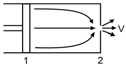
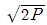
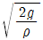
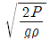
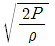
(정답률: 71%)
11. 점도 6cP를 Pa·s로 환산하면 얼마인가?
- 0.0006
- 0.006
- 0.06
- 0.6
(정답률: 72%)
12. 유선(stream line)에 대한 설명 중 잘못된 내용은?
- 유체흐름 내 모든 점에서 유체흐름의 속도벡터의 방향을 갖는 연속적인 가상곡선이다.
- 유체흐름 중의 한 입자가 지나간 궤적을 말한다.
- x, y, z 방향에 대한 속도성분을 각각 u, v, ω라고 할 때 유선의 미분방정식은
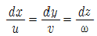
이다. - 정상유통에서 유선과 유적선은 일치한다.
(정답률: 66%)
13. U자관 마노미터를 사용하여 오리피스 유량계에 걸리는 압력차를 측정하였다. 오리피스를 통하여 흐르는 유체는 비중이 1인 물이고, 마노미터 속의 액체는 비중 13.6인 수은이다. 마노미터 읽음이 4㎝일 때 오리피스에 걸리는 압력차는 약 몇 Pa인가?
- 2470
- 4940
- 7410
- 9880
(정답률: 72%)
14. 2차원 직각좌표계 (x, y)상에서 속도 포텐셜 (ø, velocity potential)이 ø＝Ux로 주어지는 유동장이 있다. 이 유동장의 흐름함수(ψ, stream function)에 대한 표현식으로 옳은 것은? (단, U는 상수이다.)
- U(x＋y)
- U(-x＋y)
- Uy
- 2Ux
(정답률: 77%)
15. 큰 탱크에 정지하고 있던 압축성 유체가 등엔트로피 과정으로 수축-확대 노즐을 지나면서 노즐의 출구에서 초음속으로 흐른다. 다음 중 옳은 것을 모두 고른 것은?
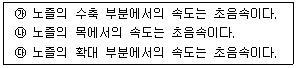
- ㉮
- ㉯
- ㉰
- ㉯, ㉰
(정답률: 67%)
16. 온도 200°C, 압력 5㎏f/cm2인 이상기체 l0cm2를 등온 조건에서 5cm2 까지 압축시키면 압력은 약 몇 kgf/cm2인가?
- 2.5
- 5
- 10
- 20
(정답률: 67%)
17. 압축성 계수 β를 온도 T, 압력 P, 부피 V의 함수로 옳게 나타낸 것은?
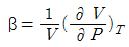
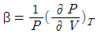
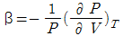
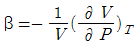
(정답률: 63%)
18. 다음 무차원수의 물리적인 의미로 옳은 것은?
- Weber No. :
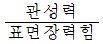
- Euler No. :
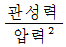
- Reynolds No. :
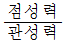
- Mach No. :
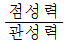
(정답률: 70%)
19. 지름이 10㎝인 파이프 안으로 비중이 0.8인 기름을 40㎏/min의 질량유속으로 수송하면 파이프 안에서 기름이 흐르는 평균속도는 약 몇 m/min인가?
- 6.37
- 17.46
- 20.46
- 27.46
(정답률: 52%)
20. 지름이 0.1m인 관에 유체가 흐르고 있다. 임계 레이놀즈수가 2100이고, 이에 대응하는 임계유속이 0.25m/s이다. 이 유체의 동점성계수는 약 몇 얼마인가?
- 0.095
- 0.119
- 0.354
- 0.454
(정답률: 77%)
2과목: 연소공학
21. 기체상태의 평형이동에 영향을 미치는 변수와 가장 거리가 먼 것은?
- 온도
- 압력
- pH
- 농도
(정답률: 82%)
22. 다음 보기에서 비등액체팽창증기폭발(BLEVE) 발생의 단계를 순서에 맞게 나열한 것은?
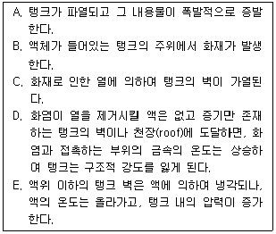
- E - D - C - A - B
- E - D - C - B - A
- B - C - E - D - A
- B - C - D - E - A
(정답률: 74%)
23. 이상기체에 대한 설명으로 틀린 것은?
- 압축인자 Z＝1이 된다.
- 상태 방정식 PV＝nRT를 만족한다.
- 비리얼방정식에서 V가 무한대가 되는 것이다.
- 내부에너지는 압력에 무관하고 단지 부피와 온도만의 함수이다.
(정답률: 74%)
24. 엔탈피에 대한 설명 중 옳지 않은 것은?
- 열량을 일정한 온도로 나눈 값이다.
- 경로에 따라 변화하지 않는 상태함수이다.
- 엔탈피의 측정에는 흐름열량계를 사용한다.
- 내부에너지와 유통일(흐름 일)의 합으로 나타낸다.
(정답률: 53%)
25. 압력 0.2MPa, 온도 333K의 공기 2㎏이 이상적인 폴리트로픽 과정으로 압축되어 압력 2MPa, 온도 523K로 변화하였을 때 그 과정에서의 일량은 약 몇 kJ인가?
- -447
- -547
- -647
- -667
(정답률: 34%)
26. 기체연료의 연소속도에 대한 설명으로 틀린 것은?
- 보통의 탄화수소와 공기의 혼합기체 연소속도는 약 400~500㎝/s 정도로 매우 빠른 편이다.
- 연소속도는 가연 한계 내에서 혼합기체의 농도에 영향을 크게 받는다.
- 연소속도는 메탄의 경우 당량비 농도 근처에서 최고가 된다.
- 혼합기체의 초기온도가 올라갈수록 연소속도도 빨라진다.
(정답률: 59%)
27. 불활성화에 대한 설명으로 틀린 것은?
- 가연성 혼합가스 중의 산소농도를 최소산소농도(MOC) 이하로 낮게하여 폭발을 방지하는 것이다.
- 일반적으로 실시되는 산소농도의 제어점은 최소산소농도(MOC)보다 약 4% 낮은 농도이다.
- 이너트 가스로는 질소, 이산화탄소, 수증기가 사용된다.
- 일반적으로 가스의 최소산소농도 (MOC)는 보통 10% 정도이고 분진인 경우에는 1% 정도로 낮다.
(정답률: 61%)
28. 열기관의 효율을 길이의 비로 나타낼 수 있는 선도는?
- P-T선도
- T-S선도
- H-S선도
- P-V선도
(정답률: 67%)
29. 공기비가 클 경우 연소에 미치는 현상으로 가장 거리가 먼 것은?
- 연소실 내의 연소온도가 내려간다.
- 연소가스 중에 CO2가 많아져 대기오염을 유발한다.
- 연소가스 중에 SOx가 많아져 저온 부식이 촉진된다.
- 통풍력이 강하여 배기가스에 의한 열손실이 많아진다.
(정답률: 56%)
30. 층류연소속도의 측정법이 아닌 것은?
- 분젠버너법
- 슬로트버너법
- 다공버너법
- 비누방울법
(정답률: 47%)
31. 오토사이클에 대한 일반적인 설명으로 틀린 것은?
- 열효율은 압축비에 대한 함수이다.
- 압축비가 커지면 열효율은 작아진다.
- 열효율은 공기표준 사이클보다 낮다.
- 이상연소에 의해 열효율은 크게 제한을 받는다.
(정답률: 69%)
32. 집진효율이 가장 우수한 집진장치는?
- 여과 집진장치
- 세정 집진장치
- 전기 집진장치
- 원심력 집진장치
(정답률: 75%)
33. 밀폐된 용기 내에 1atm, 37℃로 프로판과 산소의 비율이 2 : 8로 혼합되어 있으며 그것이 연소하여 아래와 같은 반응을 하고 화염온도는 3000K가 되었다면 이 용기 내에 발생하는 압력은 약 몇 atm인가?
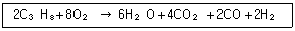
- 13.5
- 15.5
- 16.5
- 19.5
(정답률: 36%)
34. 어떤 물질이 0.MPa(게이지압)에서 UFL(연소상한계)이 12.0(vol%) 일 경우 7.0MPa(게이지압)에서는 UFL(vol%)이 약 얼마인가?
- 31
- 41
- 50
- 60
(정답률: 43%)
35. 열역학 제 2법칙에 대한 설명이 아닌 것은?
- 엔트로피는 열의 흐름을 수반한다.
- 계의 엔트로피는 계가 열을 흡수하거나 방출해야만 변화한다.
- 자발적인 과정이 일어날 때는 전체 (계와 주위)의 엔트로피는 감소하지 않는다.
- 계의 엔트로피는 증가할 수도 있고 감소할 수도 있다.
(정답률: 53%)
36. 내압방폭구조의 폭발등급 분류 중 가연성가스의 폭발 등급 A에 해당하는 최대안전 틈새의 범위 (㎜)는?
- 0.9 이하
- 0.5 초과 0.9 미만
- 0.5 이하
- 0.9 이상
(정답률: 66%)
37. 과잉공기계수가 1.3일 때 230Nm3 공기로 탄소 (C) 약 몇 ㎏을 완전 연소시킬 수 있는가?
- 4.8㎏
- 10.5㎏
- 19.9㎏
- 25.6㎏
(정답률: 53%)
38. 연료와 공기를 미리 혼합시킨 후 연소시키는 것으로 고온의 화염면(반응면)이 형성되어 자력으로 전파되어 일어나는 연소 형태는?
- 확산연소
- 분무연소
- 예혼합연소
- 증발연소
(정답률: 83%)
39. 체적이 0.8m3인 용기 내에 분자량이 20인 이상기체 10㎏이 들어 있다. 용기 내의 온도가 30℃ 라면 압력은 약 몇 MPa인가?
- 1.57
- 2.45
- 3.37
- 4.35
(정답률: 57%)
40. 상온, 상압하에서 가연성가스의 폭발에 대한 일반적인 설명으로 틀린 것은?
- 폭발범위가 클수록 위험하다.
- 인화점이 높을수록 위험하다.
- 연소속도가 클수록 위험하다.
- 착화점이 높을수록 안전하다.
(정답률: 80%)
3과목: 가스설비
41. 용기 속의 잔류가스를 배출시키려 할 때 다음 중 가장 적정한 방법은?
- 큰 통에 넣어 보관한다.
- 주위에 화기가 없으면 소화기를 준비할 필요가 없다.
- 잔가스는 내압이 없으므로 밸브를 신속히 연다.
- 통풍이 있는 옥외에서 실시하고, 조금씩 배출한다.
(정답률: 85%)
42. 토출량 5m3/min, 전양정 30m, 비교회전수 90rpm·m3/min·m인 3단 원심펌프의 회전수는 약 몇 rpm인가?
- 226
- 255
- 326
- 343
(정답률: 39%)
43. 헬륨가스의 기체상수는 약 몇 kJ/㎏·K인가?
- 0.287
- 2
- 28
- 212
(정답률: 55%)
44. 하버-보시법에 의한 암모니아 합성 시 사용되는 촉매는 주 촉매로 산화철 (Fe3O4)에 보조촉매를 사용한다. 보조촉매의 종류가 아닌 것은?
- K2O
- MgO
- Al2O3
- MnO
(정답률: 64%)
45. 부취제 주입방식 중 액체 주입식이 아닌 것은?
- 펌프 주입방식
- 적하 주입방식
- 바이패스 증발식
- 미터 연결 바이패스 방식
(정답률: 68%)
46. 정압기의 운전 특성 중 정상상태에서의 유량과 2차 압력과의 관계를 나타내는 것은?
- 정특성
- 동특성
- 사용최대차압
- 작동최소차압
(정답률: 78%)
47. 펌프의 특성 곡선상 체절운전(체절양정)이란 무엇인가?
- 유량이 0일 때의 양정
- 유량이 최대일 때의 양정
- 유량이 이론값일 때의 양정
- 유량이 평균값일 때의 양정
(정답률: 61%)
48. 배관의 전기방식 중 희생양극법에서 저전위 금속으로 주로 사용되는 것은?
- 철
- 구리
- 칼슘
- 마그네슘
(정답률: 69%)
49. 석유화학 공장 등에 설치되는 플레어 스택에서 역화 및 공기 등과의 혼합폭발을 방지하기 위하여 가스 종류 및 시설 구조에 따라 갖추어야 하는 것에 포함되지 않는 것은?
- Vacuum Breaker
- Flame Arrestor
- Vapor Seal
- Molecular Seal
(정답률: 59%)
50. 가스화의 용이함을 나타내는 지수로서 C/H비가 이용된다. 다음 중 C/H비가 가장 낮은 것은?
- Propane
- Naphtha
- Methane
- LPG
(정답률: 72%)
51. LP가스 충전설비 중 압축기를 이용하는 방법의 특정이 아닌 것은?
- 잔류가스 회수가 가능하다.
- 베이퍼록 현상 우려가 있다.
- 펌프에 비해 충전시간이 짧다.
- 압축기 오일이 탱크에 들어가 드레인의 원인이 된다.
(정답률: 63%)
52. 도시가스 원료로서 나프타(Naphtha)가 갖추어야 할 조건으로 틀린 것은?
- 황분이 적을 것
- 카본 석출이 적을 것
- 탄화물성 경향이 클 것
- 파라핀계 탄화수소가 많을 것
(정답률: 53%)
53. 원심압축기의 특징이 아닌 것은?
- 설치면적이 적다.
- 압축이 단속적이다.
- 용량조정이 어렵다.
- 윤활유가 불필요하다.
(정답률: 54%)
54. 펌프의 이상현상에 대한 설명 중 틀린 것은?
- 수격작용이란 유속이 급변하여 심한 압력변화를 갖게 되는 작용이다.
- 서징(surging)의 방지법으로 유량조정밸브를 펌프 송출측 직후에 배치시킨다.
- 캐비테이션 방지법으로 관경과 유속을 모두 크게 한다.
- 베이퍼록은 저비점 액체를 이송시킬 때 입구 쪽에서 발생되는 액체비등 현상이다.
(정답률: 76%)
55. 압축기의 실린더를 냉각하는 이유로서 가장 거리가 먼 것은?
- 체적효율 증대
- 압축효율 증대
- 윤활기능 향상
- 토출량 감소
(정답률: 72%)
56. 2단 감압방식의 장점에 대한 설명이 아닌 것은?
- 공급압력이 안정적이다.
- 재액화에 대한 문제가 없다.
- 배관 입상에 의한 압력손실을 보정할 수 있다.
- 연소기구에 맞는 압력으로 공급이 가능하다.
(정답률: 75%)
57. 용기밸브의 충전구가 왼나사 구조인 것은?
- 브롬화메탄
- 암모니아
- 산소
- 에틸렌
(정답률: 61%)
58. LP가스의 일반적인 성질에 대한 설명 중 옳은 것은?
- 증발잠열이 작다.
- LP가스는 공기보다 가볍다.
- 가압하거나 상압에서 냉각하면 쉽게 액화한다.
- 주성분은 고급탄화수소의 화합물이다.
(정답률: 66%)
59. 스테인리스강을 조직학적으로 구분하였을 때 이에 속하지 않는 것은?
- 오스테나이트계
- 보크사이트계
- 페라이트계
- 마텐자이트계
(정답률: 60%)
60. 고압가스 장치 재료에 대한 설명으로 틀린 것은?
- 고압가스 장치에는 스테인리스강 또는 크롬강이 적당하다.
- 초저온 장치에는 구리, 알루미늄이 사용된다.
- LPG 및 아세틸렌 용기 재료로는 Mn강을 주로 사용한다.
- 산소, 수소 용기에는 Cr강이 적당하다.
(정답률: 45%)
4과목: 가스안전관리
61. 가연성가스의 검지경보장치 중 방폭구조로 하지 않아도 되는 가연성가스는?
- 아세틸렌
- 프로판
- 브롬화메탄
- 에틸에테르
(정답률: 70%)
62. 역화방지장치를 설치하지 않아도 되는 곳은?
- 아세틸렌 충전용 지관
- 가연성가스를 압축하는 압축기와 오토크레이브 사이의 배관
- 가연성가스를 압축하는 압축기와 충전용 주관과의 사이
- 아세틸렌 고압건조기와 충전용 교체밸브 사이 배관
(정답률: 47%)
63. 공기액화 분리기의 액화공기 탱크와 액화산소 증발기와의 사이에는 석유류, 유지류 그 밖의 탄화수소를 여과, 분리하기 위한 여과기를 설치해야 한다. 이때 l 시간의 공기 압축량이 몇 m3이하의 것은 제외하는가?
- 100m3
- 1000m3
- 5000m3
- 10000m3
(정답률: 65%)
64. 시안화수소(HCN) 가스의 취급 시 주의사항으로 가장 거리가 먼 것은?
- 금속부식주의
- 노출주의
- 독성주의
- 중합폭발주의
(정답률: 57%)
65. 가스용기의 도색으로 옳지 않은 것은? (단, 의료용 가스 용기는 제외한다.)
- O2 : 녹색
- H2 : 주황색
- C2H2 : 황색
- 액화암모니아 : 회색
(정답률: 73%)
66. 공기압축기의 내부 윤활유로 사용할 수 있는 것은?
- 잔류탄소의 질량이 전질량의 1% 이하이며 인화점이 200℃ 이상으로서 170℃에서 8시간 이상 교반하여 분해되지 않는 것
- 잔류탄소의 질량이 전질량의 1% 이하이며 인화점이 270℃ 이상으로서 170℃에서 12시간 이상 교반하여 분해되지 않는 것
- 잔류탄소의 질량이 1% 초과 1.5% 이하이며 인화점이 200℃ 이상으로서 170℃에서 8시간 이상 교반하여 분해되지 않는 것
- 잔류탄소의 질량이 1% 초과 1.5% 이하이며 인화점이 270℃ 이상으로서 170℃에서 12시간 이상 교반하여 분해되지 않는 것
(정답률: 49%)
67. 다음 중 고유의 색깔을 가지는 가스는?
- 염소
- 황화수소
- 암모니아
- 산화에틸렌
(정답률: 67%)
68. 염소가스 운반 차량에 반드시 비치하지 않아도 되는 것은?
- 방독마스크
- 안전장갑
- 제독제
- 소화기
(정답률: 75%)
69. 암모니아를 실내에서 사용할 경우 가스누출 검지경보장치의 경보농도는?
- 25ppm
- 50ppm
- 100ppm
- 200ppm
(정답률: 63%)
70. 이동식부탄연소기(카세트식)의 구조에 대한 설명으로 옳은 것은?
- 용기장착부 이외에 용기가 들어가는 구조이어야 한다.
- 연소기는 50% 이상 충전된 용기가 연결된 상태에서 어느 방향으로 기울여도 20°이내에서는 넘어지지 아니 하여야 한다.
- 연소기는 2가지 용도로 동시에 사용할 수 없는 구조로 한다.
- 연소기에 용기를 연결할 때 용기 아랫부분을 스프링의 힘으로 직접 밀어서 연결하는 방법 또는 자석에 의하여 연결하는 방법이어야 한다.
(정답률: 65%)
71. 액화석유가스 외의 액화가스를 충전하는 용기의 부속품을 표시하는 기호는?
- AG
- PG
- LG
- LPG
(정답률: 71%)
72. 고압가스의 운반기준에 대한 설명 중 틀린 것은?
- 차량 앞뒤에 경계표지를 할 것
- 충전 탱크의 온도는 40℃ 이하를 유지할 것
- 액화가스를 충전하는 탱크에는 그 내부에 방파판 등을 설치할 것
- 2개 이상 탱크를 동일차량에 고정하여 운반하지 말 것
(정답률: 72%)
73. 다음 중 가연성가스이지만 독성이 없는 가스는?
- NH3
- CO
- HCN
- C3H6
(정답률: 68%)
74. 공급자의 안전점검 기준 및 방법과 관련하여 틀린 것은?
- 충전용기의 설치 위치
- 역류방지장치의 설치 여부
- 가스 공급 시 마다 점검 실시
- 독성가스의 경우 흡수장치 · 제해장치 및 보호구 등에 대한 적합 여부
(정답률: 52%)
75. 용기에 의한 액화석유가스 사용시설에 설치하는 기화장치에 대한 설명으로 틀린 것은?
- 최대 가스소비량 이상의 용량이 되는 기화장치를 설치한다.
- 기화장치의 출구배관에는 고무호스를 직접 연결하여 열차단이 되게 하는 조치를 한다.
- 기화장치의 출구측 압력은 1MPa 미만이 되도록 하는 기능을 갖거나, 1MPa 미만에서 사용한다.
- 용기는 그 외면으로부터 기화장치까지 3m 이상의 우회거리를 유지한다.
(정답률: 57%)
76. 고압가스 충전용기 퉁의 적재, 취급, 하역 운반요령에 대한 설명으로 가장 옳은 것은?
- 교통량이 많은 장소에서는 엔진을 켜고 용기 하역작업을 한다.
- 경사진 곳에서는 주차 브레이크를 걸어놓고 하역작업을 한다.
- 충전용기를 적재한 차량은 제 1종 보호시설과 10m 이상의 거리를 유지한다.
- 차량의 고장 등으로 인하여 정차하는 경우는 적색표지판 등을 설치하여 다른 차와의 충돌을 피하기 위한 조치를 한다.
(정답률: 76%)
77. 고압가스 저장탱크에 아황산가스를 충전할 때 그 가스의 용량이 그 저장탱크 내용적의 몇 %를 초과하는 것을 방지하기 위한 과충전방지조치를 강구하여야 하는가?
- 80%
- 85%
- 90%
- 95%
(정답률: 74%)
78. 액화석유가스 고압설비를 기밀시험하려고 할 때 가장 부적당한 가스는?
- 산소
- 공기
- 이산화탄소
- 질소
(정답률: 67%)
79. 내용적이 3000L인 차량에 고정된 탱크에 최고 충전압력 2.1MPa로 액화가스를 충전하고자할 때 탱크의 저장능력은 얼마가 되는가? (단, 가스의 충전정수는 2.1MPa에서 2.35MPa이다.)
- 1277㎏
- 142㎏
- 7⑤㎏
- 630㎏
(정답률: 55%)
80. 가스사고를 사용처별로 구분했을 때 가장 빈도가 높은 곳은?
- 공장
- 주택
- 공급시설
- 식품접객업소
(정답률: 73%)
5과목: 가스계측기기
81. 산소(O2)는 다른 가스에 비하여 강한 상자성체이므로 자장에 대하여 흡인되는 특성을 이용하여 분석하는 가스분석계는?
- 세라믹식 O2계
- 자기식 O2계
- 연소식 O2계
- 밀도식 O2계
(정답률: 80%)
82. 다음 중 연당지로 검지할 수 있는 가스는?
- COCl2
- CO
- H2S
- HCN
(정답률: 66%)
83. 불꽃이온화검출기 (FID)에 대한 설명 중 옳지 않은 것은?
- 감도가 아주 우수하다.
- FID에 의 한 탄화수소의 상대 감도는 탄소수에 거의 반비례한다.
- 구성요소로는 시료가스, 노즐, 컬렉터 전극, 증폭부, 농도 지시계 등이 있다.
- 수소 불꽃 속에 탄화수소가 들어가면 불꽃의 전기전도도가 증대하는 현상을 이용한 것이다.
(정답률: 66%)
84. 경사관 압력계에서 P1의 압력을 구하는 식은? (단, γ : 액체의 비중량, P2 : 가는 관의 압력, θ : 경사각, X : 경사관 압력계의 눈금이다.)
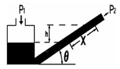
- P1＝P2/sinθ
- P1＝P2γcosθ
- P1＝P2＋γX cosθ
- P1＝P2＋γXsinθ
(정답률: 69%)
85. 부르동관 재질 중 일반적으로 저압에서 사용하지 않는 것은?
- 황동
- 청동
- 인청동
- 니켈강
(정답률: 68%)
86. 구리-콘스탄탄 열전대의 (-)극에 주로 사용되는 금속은?
- Ni-Al
- Cu-Ni
- Mn-Si
- Ni-Pt
(정답률: 71%)
87. 압력계측 장치가 아닌 것은?
- 마노미터 (manometer)
- 벤투리미터 (Venturi meter)
- 부르동 게이지 (Bourdon gauge)
- 격막식 게이지 (diaphragm gauge)
(정답률: 57%)
88. 루트 가스미터의 고장에 대한 설명으로 틀린 것은?
- 부동 - 회전자는 회전하고 있으나, 미터의 지침이 움직이지 않는 고장
- 떨림 - 회전자 베어링의 마모에 의한 회전자 접촉 등에 의해 일어나는 고장
- 기차불량 - 회전자 베어링의 마모에 의한 간격 증대 등에 의해 일어나는 고장
- 불통 - 회전자의 회전이 정지하여 가스가 통과하지 못하는 고장
(정답률: 50%)
89. 제어계 오차가 검출될 때 오차가 변화하는 속도에 비례하여 조작량을 가·감산하도록 하는 동작은?
- 미분동작
- 적분동작
- 온-오프동작
- 비례동작
(정답률: 54%)
90. 가스계량기의 설치장소에 대한 설명으로 틀린 것은?
- 화기와 습기에서 멀리 떨어지고 통풍이 양호한 위치
- 가능한 배관의 길이가 길고 꺾인 위치
- 바닥으로부터 1.6m 이상 2.0m 이내에 수직, 수평으로 설치
- 전기 공작물과 일정 거리 이상 떨어진 위치
(정답률: 80%)
91. 다이어프램 압력계의 특징에 대한 설명 중 옳은 것은?
- 감도는 높으나 응답성이 좋지 않다.
- 부식성 유체의 측정이 불가능하다.
- 미소한 압력을 측정하기 위한 압력계이다.
- 과잉압력으로 파손되면 그 위험성은 커진다.
(정답률: 64%)
92. 교통 신호등은 어떤 제어를 기본으로 하는가?
- 피드백 제어
- 시퀀스 제어
- 캐스케이드 체어
- 추종 제어
(정답률: 79%)
93. 다음 가스분석 방법 중 흡수분석법이 아닌 것은?
- 헴펠법
- 적정법
- 오르자트법
- 게겔법
(정답률: 69%)
94. 가스크로마토그래피에서 운반가스의 구비조건으로 옳지 않은 것은?
- 사용하는 검출기에 적합해야 한다.
- 순도가 높고 구입이 용이해야 한다.
- 기체 확산이 가능한 큰 것이어야 한다.
- 시료와 반응성이 낮은 불활성 기체이어야 한다.
(정답률: 73%)
95. 안전등형 가스검출기에서 청색 불꽃의 길이로 농도를 알 수 있는 가스는?
- 수소
- 메탄
- 프로판
- 산소
(정답률: 59%)
96. 습한 공기 2⑤㎏ 중 수증기가 35㎏ 포함되어 있다고 할 때 절대습도(㎏/㎏)는? (단, 공기와 수증기의 분자량은 각각 29, 18로 한다.)
- 0.106
- 0.128
- 0.171
- 0.206
(정답률: 45%)
97. 계측기의 감도에 대하여 바르게 나타낸 것은?
- 지시량의 변화/측정량의 변화
- 측정량의 변화/지시량의 변화
- 지시량의 변화-측정량의 변화
- 측정량의 변화-지시량의 변화
(정답률: 60%)
98. 회전수가 비교적 적기 때문에 일반적으로 100m3/h 이하의 소용량 가스계량에 적합하며 독립내기식과 그로바식으로 구분되는 가스미터는?
- 막식
- 루트미터
- 로터리피스톤식
- 습식
(정답률: 67%)
99. 열전대 온도계의 특징에 대한 설명으로 틀린 것은?
- 냉접점이 있다.
- 보상 도선을 사용한다.
- 원격 측정용으로 적합하다.
- 접촉식 온도계 중 가장 낮은 온도에 사용된다.
(정답률: 74%)
100. 점도의 차원은? (단, 차원기호는 M : 질량, L : 길이, T : 시간이다 )
- MLT-1
- ML-1T-1
- M-1LT-1
- M-1L-1T
(정답률: 74%)